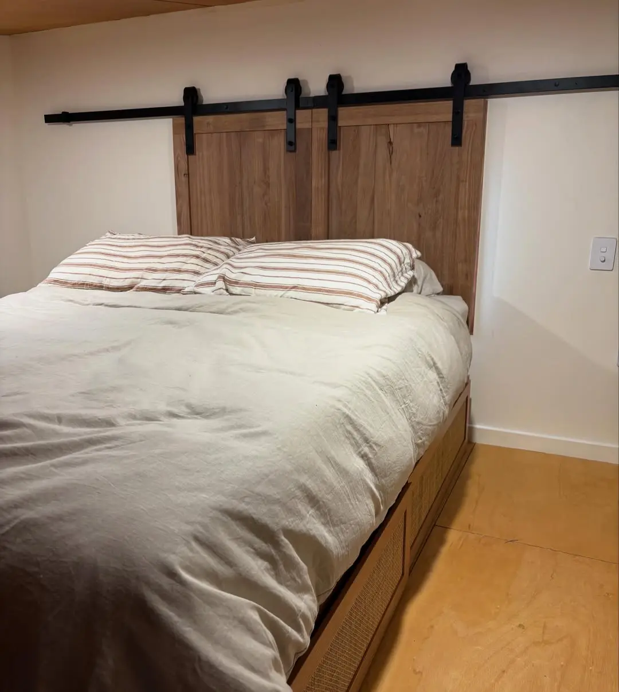

Kitchens, sliders and reveals
A timber-topped shouse kitchen, Marri barn sliders for a loft window, and timber window and door reveals.

“Some barn sliders for this loft window! Handmade 10mm marri flooring doors came up a treat!”Daniel Weston, on Instagram
The story
The small jobs inside a house are the ones you touch every day. A benchtop with a mitred corner that lines the grain up like a chevron. Sliding doors for a loft window, made by hand from 10 mm Marri flooring. Window reveals in solid timber, clamped and set square before the plaster goes on.
“This Shouse kitchen install turned out with such a warm homely feeling,” is how Daniel put it, and that's the aim with all of it.
- Species
- Timber
- Marri, plus solid timber benchtops
- Scope
- Kitchen install with mitred timber benchtop, barn sliders, window and door reveals
- Where
- Margaret River region, WA
Part 1 of 3
Shouse kitchen
Part 2 of 3
Barn sliders
Two sliding doors on a black track, made from 10 mm Marri flooring, closing over the loft window.
Part 3 of 3
Window and door reveals
Your turn
Want something like this at your place?
Tell Daniel what you're picturing. It takes a minute, and he'll call you back to talk it through.
Keep reading